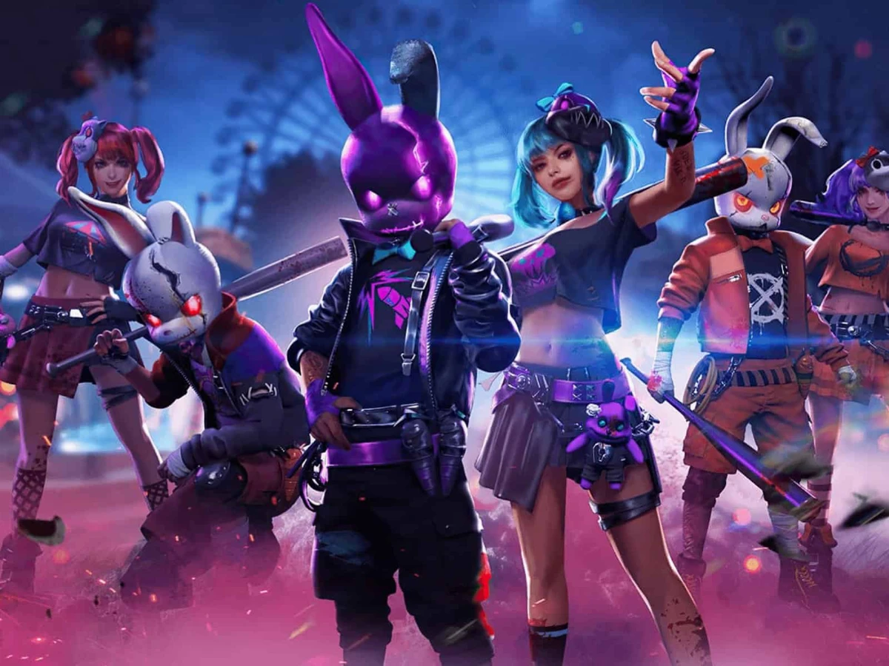

free fire;

Free Fire: O Fenômeno dos Battle Royales
Free Fire é um dos jogos móveis mais populares do mundo, atraindo milhões de jogadores todos os dias com sua jogabilidade dinâmica e acessibilidade. Desenvolvido pela Garena, Free Fire é um jogo de battle royale que coloca os jogadores em uma ilha isolada, onde o objetivo é sobreviver até ser o último sobrevivente. Com partidas rápidas e emocionantes, o jogo oferece uma experiência intensa de ação, onde a estratégia, a habilidade e o trabalho em equipe são fundamentais.
O Jogo
Cada partida de Free Fire começa com até 50 jogadores que saltam de paraquedas em uma grande ilha. Uma vez no solo, os jogadores devem procurar por armas, munição e equipamentos, enquanto enfrentam outros jogadores em um espaço cada vez menor. À medida que o tempo passa, a zona segura do mapa vai diminuindo, forçando os jogadores a se moverem em direção a áreas mais perigosas, o que aumenta a tensão e a ação.
Uma das características que torna Free Fire único é o seu ritmo acelerado. Ao contrário de outros jogos do gênero, as partidas duram cerca de 10 minutos, o que as torna ideais para quem busca uma experiência mais rápida, mas igualmente emocionante. Além disso, o jogo apresenta uma grande variedade de personagens, cada um com habilidades especiais que podem alterar o curso da partida, o que adiciona mais estratégia e profundidade ao jogo.
Personagens e Habilidades
Uma das principais atrações de Free Fire são os personagens, conhecidos como "heróis". Cada personagem possui uma habilidade única que pode ser usada para vantagem no campo de batalha. Por exemplo, alguns personagens podem curar os aliados mais rapidamente, enquanto outros podem causar mais dano com armas específicas ou até mesmo reduzir o tempo de recarga de habilidades. Essa diversidade de habilidades permite que os jogadores escolham o estilo de jogo que mais se adapta às suas preferências, seja mais agressivo ou mais tático.
Modos de Jogo e Inovações
Além do tradicional modo battle royale, Free Fire oferece outros modos de jogo, como o Clash Squad (onde duas equipes competem em uma série de rodadas) e o Modo Zombie, em que os jogadores enfrentam hordas de zumbis. Isso mantém o jogo fresco e oferece novas maneiras de jogar, além da possibilidade de jogar com amigos e formar equipes para enfrentar os desafios juntos.
Além disso, Free Fire está sempre se renovando com atualizações constantes, trazendo novos mapas, skins, eventos e parcerias especiais com marcas populares e celebridades, o que mantém a comunidade engajada e empolgada.
A Comunidade e o Cenário Competitivo
Free Fire também se destaca por sua grande comunidade de jogadores e seu cenário competitivo. A Garena organiza torneios e campeonatos regionais e mundiais, oferecendo aos jogadores a chance de mostrar suas habilidades e conquistar prêmios valiosos. Isso gerou uma base de fãs apaixonados e uma cena de eSports em constante crescimento, com times e jogadores profissionais se destacando globalmente.
Acessibilidade e Sucesso Global
Uma das razões para o sucesso estrondoso de Free Fire é sua acessibilidade. Por ser um jogo móvel, ele pode ser jogado em uma ampla gama de dispositivos, incluindo smartphones de baixo custo. Isso permitiu que Free Fire conquistasse uma enorme base de jogadores, especialmente em países da Ásia, América Latina e outros mercados emergentes, onde muitas pessoas não têm acesso a consoles ou PCs de alto desempenho.
Conclusão
Free Fire se tornou um fenômeno global não apenas pelo seu gameplay emocionante e acessível, mas também pela maneira como consegue se reinventar constantemente, mantendo os jogadores sempre engajados. Com sua combinação de ação rápida, estratégia profunda e atualizações regulares, Free Fire continuará sendo uma das principais opções no gênero de battle royale nos dispositivos móveis. Se você ainda não jogou, vale a pena dar uma chance e se juntar à comunidade vibrante e apaixonada deste jogo.